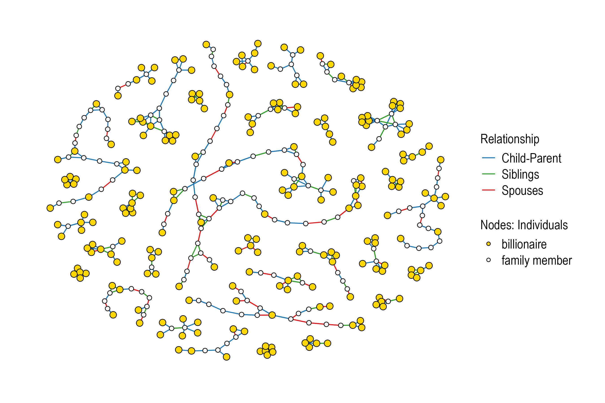
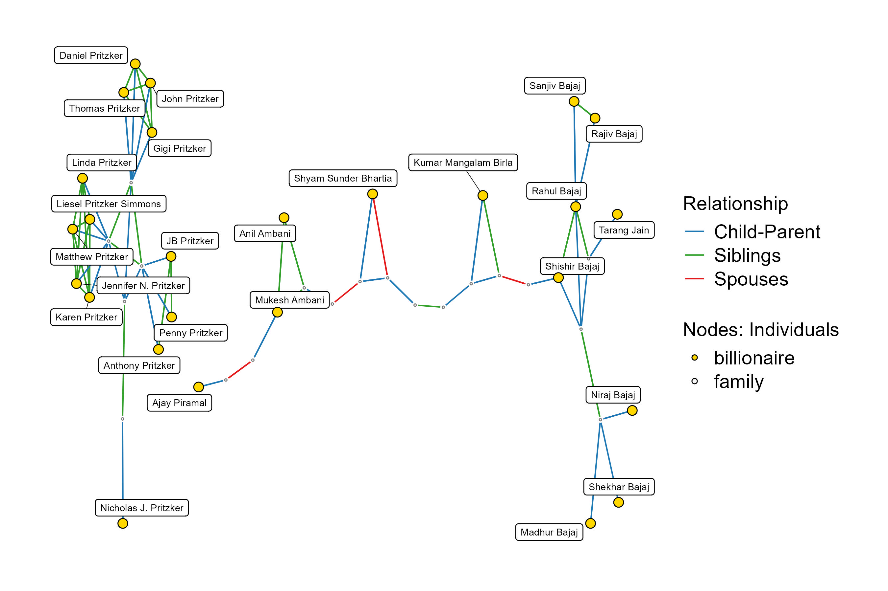
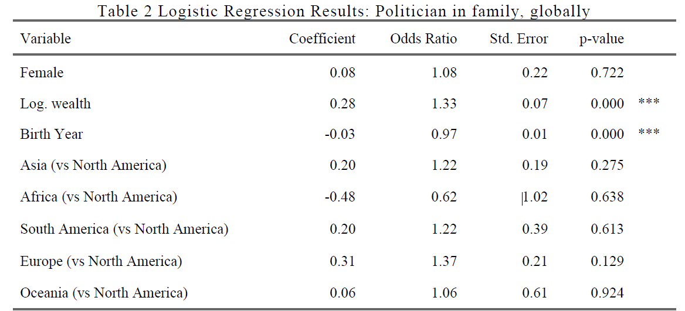
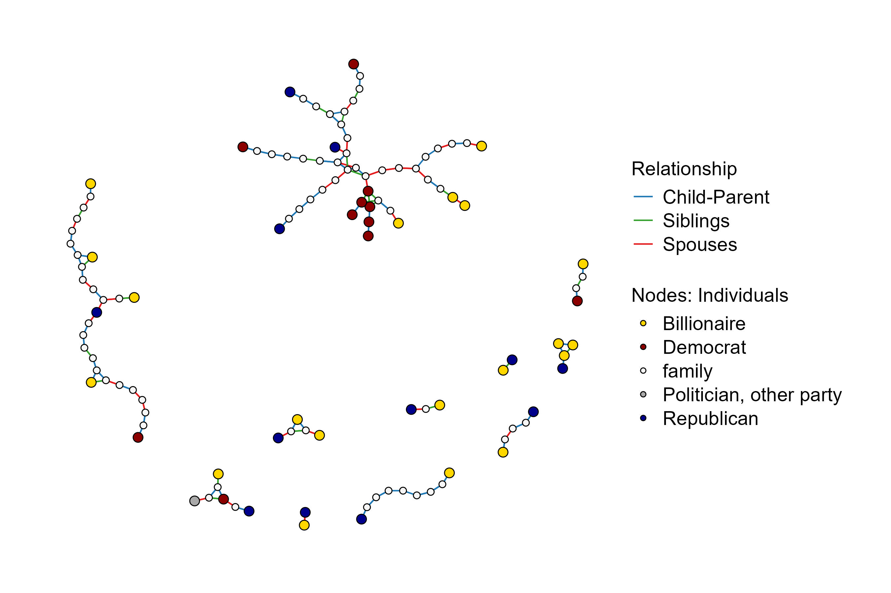
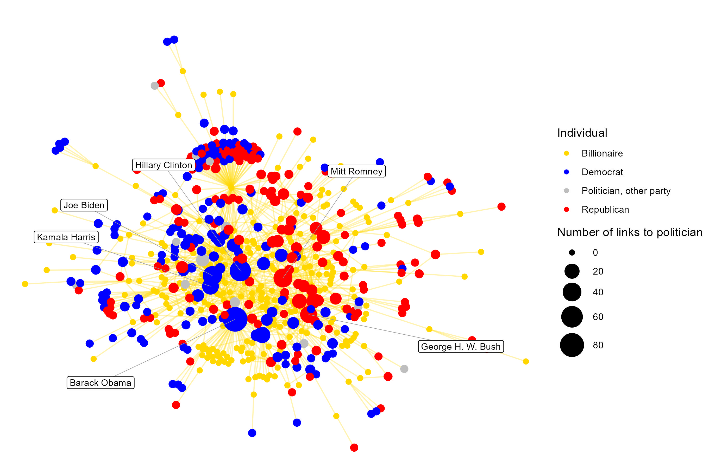
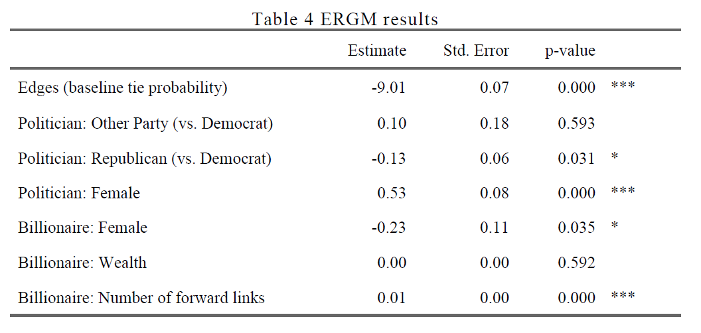

Reichtums- und Elitenforschung mit Wikipedia und Wikidata:
Insbesondere Analyse sozialer Netzwerke
Die unsichtbare Spitze. Neue Ansätze zur Analyse wirtschaftlicher Eliten und von Vermögensungleichheit
Daria Tisch (und Franziska Pradel)
Max-Planck-Institut für Gesellschaftsforschung
Warum Eliten erforschen?
Eliten haben einen überproportionalen Zugang zu Resourcen (Khan 2012)
Eliten prägen Politik, Ungleichheit und sozialen Wandel
Traditionelle Elitenforschung: begrenzte Daten, Fokus auf einzelne Länder
Neue Initiative: standardisierte, länderübergreifender Datensatz: The world elite database (Bühlmann et al. 2025)
Neue Chancen durch digitale Wissensinfrastrukturen
Wikipedia → unstrukturierte, kollaborativ verfasste Texte
Wikidata → strukturierte, maschinenlesbare Daten
Beide: offen, großskalig, kontinuierlich aktualisiert
Erschließen neue Möglichkeiten für die Erforschung von Eliten
Fokus dieses Vortrags
Wie können Wikipedia und Wikidata für die Rechtumsforschung genutzt werden?
Fallbeispiel: globale Milliardär:innen (Forbes 2010–2025, N = 4796)
Fokus auf die Verflechtungen dieser
Zentrale Dimensionen / Fragestellungen:
Familiäre Verbindungen (Generationen- & Ehebindungen)
Verknüpfungen zu politischen Eliten
Symbolische/reputationale Verbindungen (Wikipedia-Hyperlinks)
Hintergrund
Theoretischer Hintergrund: Elitenforschung
Zentrale Fragen der Elitenforschung
Wer gehört zu den Eliten?
Wie prägen Eliten Gesellschaft, Politik und Ungleichheit?
Elitenforschung = Machtforschung von oben (Khan 2012)
Institutionen der Elitenreproduktion
Schulen, Familien, Clubs, Netzwerke → sichern Zugang zu Ressourcen
Familie als Schlüsselinstitution für die Strukturierung der Vermögenselite
Rolle der Familie in der Reproduktion von Vermögenspositionen
Vermögensübertragung: Erbschaften, Stiftungen, Trusts, „hidden helpers“ (Beckert 2022; Derix and Panter 2015; Shiffer-Sebba 2025)
Sozialisation & Kultur: Weitergabe von sozialem und kulturellem Kapital (Kuusela 2018)
Heiratsallianzen: Bündeln von Ressourcen, soziale Schließung, Dynastiebildung (Tisch and Ischinsky 2023; Farrell 1993)
Strategische Allianzen: Verknüpfungen mit anderen Elitefamilien, Unternehmen und politischen Akteuren (Farrell 1993)
Diese Studie
- Familiäre Netzwerke in der globalen Vermögenselite
- Genealogische Analysen → Dynastien, Heiratsmuster, soziale Schließung
- Familie = Motor für die Reproduktion ökonomischer Macht
- Genealogische Analysen → Dynastien, Heiratsmuster, soziale Schließung
- Verflechtung von ökonomischen und politischen Eliten
- Wirtschaftliche Ressourcen ↔︎ politische Macht.
- Familienbindungen können Brücken zwischen beiden Sphären schlagen
- Wirtschaftliche Ressourcen ↔︎ politische Macht.
- Symbolische Netzwerke (Wikipedia-Hyperlinks)
- Abbild öffentlicher, reputationaler Verbindungen
- Offenbaren Assoziationen, gegenseitige Anerkennung und kulturelle Bedeutung
- Ergänzen genealogische Analysen um symbolische Dimensionen der Elitevernetzung
Methodisches Vorgehen
Verknüpfung der Forbes-Listen mit Wikidata & Wikipedia.
Extraktion genealogischer (Familien-) und hyperlinkbasierter (symbolischer) Daten.
Aufbau eines Datensatzes zu politischen Eliten (Wikidata + Comparative Legislator Database).
Netzwerkanalysen → Familiendynastien, Heiratsverbindungen, symbolische Assoziationen.
Daten
Die MilliardärInnen der Welt auf Wikidata
Datenbank: Forbes MilliardärInnen, 2010-2025
N = 4,796 MilliardärInnen
Halbautomatischer Abgleich mit Wikidata mit Hilfe von OpenRefine

Knowlege Graph - Wissensgraphen
Wissensgraphen sind definiert als Graphen von Daten, die Wissen über die reale Welt sammeln und vermitteln. Die Knoten in Wissensgraphen stellen die interessierenden Einheiten dar, und die Kanten stellen die Beziehungen zwischen den Einheiten dar (Peng et al. 2023)
Wikidata als Wissensgraph

“Wikidata is a free, collaborative, multilingual, secondary database, collecting structured data to provide support for Wikipedia, Wikimedia Commons, the other wikis of the Wikimedia movement, and to anyone in the world”(Wikidata 2023)
Kann sowohl von Menschen als auch von Maschinen gelesen und bearbeitet werden
Zentraler Speicher für die strukturierten Daten der Wikimedia-Projekte (z.B. Wikipedia)
Jedes Element in Wikidata ist mit verschiedenen Attributen und anderen Elementen verknüpft, was komplexe Abfragen und Datenextraktionen ermöglicht.
Wikidata Page: Bill Gates
Wikidata Query Service
Query: What is the place of birth of Bill Gates’ grandfather?
Query: How many employees does Bill Gates have?
Die Stärken von Wikidata für die Sozialwissenschaften
- Wikidata als Content-Provider: stellt strukturierte, menschen- und maschinenlesbare Informationen zu verschiedenen Themen bereit → Abfragesprache SPARQL
- Wikidata als Anbieter linked open data: Links zu anderen Datenbanken über externe Identifikatoren (z.B. Twitter, ORCID, Filmdatenbanken)
- Wikidata als eine wachsende Wissensbasis: Sozialwissenschaftl. können zu Wikidata beitragen, indem sie ihre Daten importieren oder ihre Daten mit bestehenden Datensätzen verknüpfen (z. B. Comparative Legislators Database)
- Wikidata ist mehrsprachig: Recherche ohne Sprachbarrieren, Named Entity Linking
- Wikidata ist frei: jeder kann es nutzen, wiederverwenden und weiterverbreiten.
Vorbehalte
Genauigkeit der Daten (z. B. Voreingenommenheit der EditorInnen)
Fehlende Informationen (z. B. verzerrt, Geschlecht, Sprache) (Wagner et al. 2015)
Deskriptive Statistik

Ergebnisse
1. Wie sind die globalen MilliardärInnen durch familiäre Beziehungen miteinander verbunden, einschließlich der Beziehungen zwischen den Generationen und der ehelichen Beziehungen?
Netzwerk der MilliardärInnen: mind. 5 pro Netzwerk
Größte Familiennetzwerke von MilliardärInnen
Probability of having another billionaire on the family web

2. Inwieweit verbinden diese Familiennetzwerke MilliardärInnen mit politischen Eliten?
Familiennetzwerk von MilliardärInnen und PolitikerInnen (weltweit)

Probability of having a politician on their family web
Familiennetzwerke mit MilliardärInnen und PolitikerInnen (nur USA)
3. Wie sind die MilliardärInnen durch Wikipedia-Verweise mit PolitikerInnen verbunden, was auf Muster symbolischer oder reputationsbezogener Verbindungen hinweist?
Links zwischen Wikipedia-Seiten von MilliardärInnen und PolitikerInnen
ERGM estimating the likelihood of a hyperlink between a billionaire and a politician Wikipedia page
Beitrag der Studie
- Empirisch
- Einblicke in Reproduktion & Verflechtungen der Eliten
- Familiendynastien, ökonomisch-politische Verflechtungen, symbolische Verbindungen
- Methodisch
- Chancen & Grenzen von Wikipedia/Wikidata für die Sozialwissenschaft
- Beispiel wie geneologische Daten genutzt werden können
- Netzwerkdaten bieten viele Möglichkeiten
- Didaktisch
- Integration offener Wissensinfrastrukturen in die Lehre
- Bereitstellung von Daten & Code für praxisnahes Lernen
- Integration offener Wissensinfrastrukturen in die Lehre